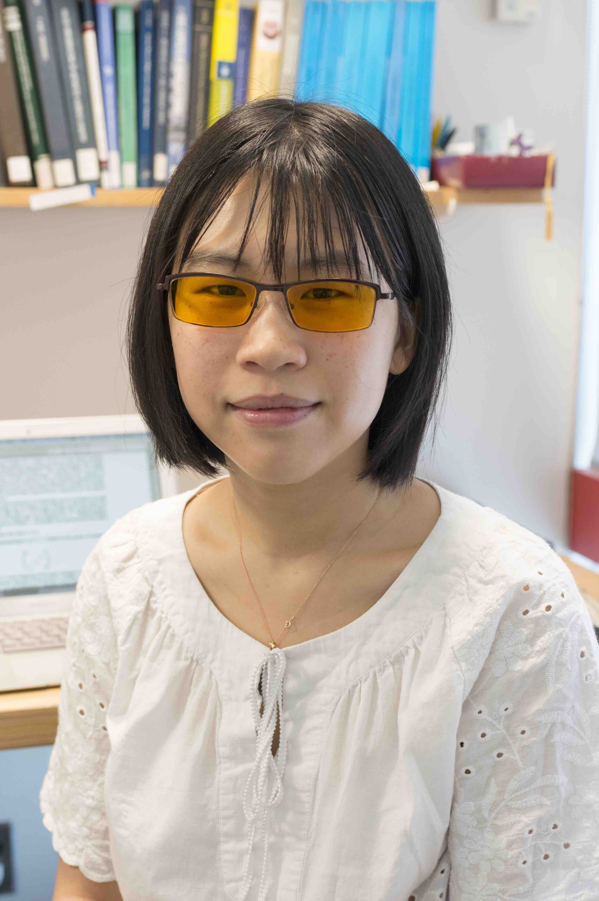

|  (Photo by Jim Gensheimer) |
Email: chsu6 [at] scu.edu
Address: |
Since Fall 2023, I am an Assistant Professor at Santa Clara University.
From March 2022 to July 2023, I was a postdoctoral researcher at Laboratoire Paul Painlevé, Université de Lille, working with Mladen Dimitrov as part of the GALF project.
From July 2019 to March 2022, I was a Hedrick Assistant Adjunct Professor at UCLA mentored by Romyar Sharifi.
I received my PhD from Harvard University in 2019 under the supervision of Barry Mazur.
My CV (updated 2024/09/29).
Last updated: Sep 29, 2024